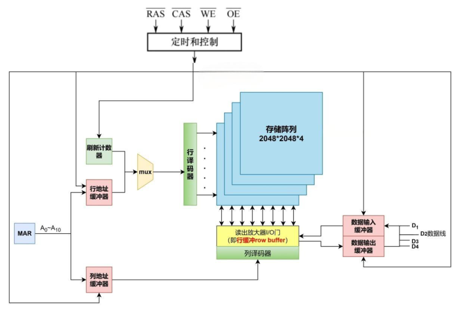
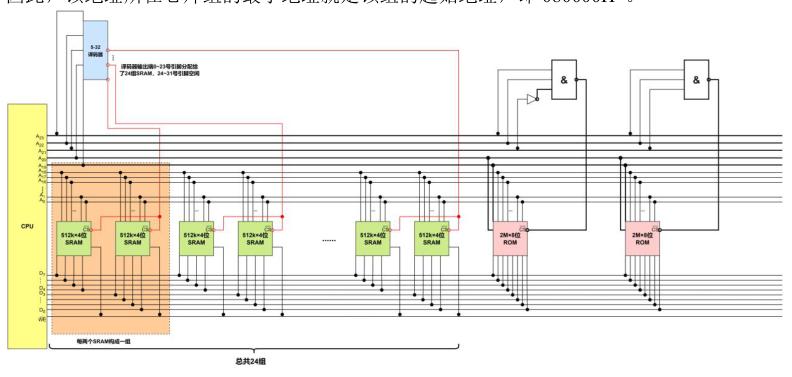
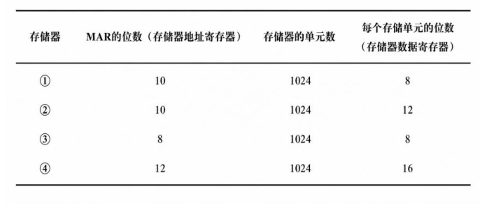

第 1 题
按存储介质分类，下列存储器中属于半导体存储器的是（ ）。
A． 机械硬盘 B． 光盘 C． SRAM D． 磁带 答案与解析 答案：C
SRAM（静态随机存取存储器）是利用半导体器件的双稳态电路来存储信息，属于半导体存储器，C正确；机械硬盘是磁表面存储器，一般又称磁盘，A错误；光盘是光存储器，B错误；磁带也是磁表面存储器，D错误。注意：固态硬盘属于半导体存储器，其核心存储介质为闪存，不同于机械硬盘。
教材第 77 页 第 2 题
关于各类存储器的介质特性、存取方式及功能的描述，下列说法正确的是（ ）。
A． SSD 属于磁表面存储器，由于其容量极大且单位成本低，常被用作辅助存储器 B． RAM 和ROM 都采用随机存取方式，因此所有的半导体存储器都按地址随机访问 C． CD-ROM 属于光存储器，存取方式兼有随机访问和顺序访问的特点，属于直接存取（DAM） D． SRAM 成本太高只能做Cache，ROM 只能固化不能作主存。所以主存全部由DRAM 构成 答案与解析 答案：C
A 选项错误：固态硬盘（SSD）是基于闪存技术（Flash Memory），属于半导体介质。传统的机械硬盘（HDD）才是磁表面存储器。 B 选项错误：RAM 和ROM 确实都采用随机存取方式，但并非所有半导体存储器都是按地址随机访问。例如快表（TLB）和全相联Cache 的Tag 是按内容访问（CAM）的半导体存储器。 C 选项正确：CD-ROM 属于光存储器，光头可以先定位区域（直接）再顺序查找（顺序），这种结合的模式属于直接存取（DAM）。 D选项错误：通用计算机的主存由RAM和ROM共同组成，包含存放系统启动程序的ROM区 （BIOS），所以“全部由DRAM 构成”是错误的。
教材第 77 页 第 3 题
按访问方式分类，Cache 属于（ ）。
A． 随机存取存储器 B． 顺序存取存储器 C． 直接存取存储器 D． 只读存储器 答案与解析 答案：A
Cache（高速缓存）可以随机地对任何存储单元进行存取操作，属于随机存取存储器；顺序存取存储器如磁带，只能按顺序依次访问；直接存取存储器如磁盘，先直接定位到存储区域，再顺序访问；只读存储器只能读取数据。
教材第 77 页 第 4 题
关于存储器的分类与介质特性，下列说法正确的是（ ）。
A． 固态硬盘（SSD）与机械硬盘（HDD）虽然读写机制不同，但均属于磁表面存储器 B． 计算机的主存绝大部分由DRAM 构成，相比于SRAM，DRAM 的集成度更高且不需要定期刷新 C． 闪存（Flash Memory）属于半导体存储器，本质上是一种电可擦除的只读存储器（EEPROM） D． CPU 内通用寄存器组属于半导体存储器，主要用来存放运算的中间结果，且为了防止计算机突然断电导致数据丢失，它通常被设计为非易失性存储器 答案与解析 答案：C
A选项错误：传统的机械硬盘（HDD）依靠磁盘盘片和读写磁头工作，属于磁表面存储器；而固态硬盘（SSD）是基于闪存技术（Flash Memory），属于半导体存储器。两者介质完全不同。 B选项错误：这道题的陷阱在于后半句：DRAM是以电容充电原理寄存信息的，电荷会逐渐泄漏，因此必须定期进行刷新；相反，SRAM是以触发器原理寄存信息的，不需要定期刷新。 C选项正确：我们常用的固态硬盘或U盘所使用的闪存（FlashMemory），属于半导体存储器。它在技术分类上属于电可擦除的ROM，即EEPROM ()。 D选项错误：前半句是正确的，CPU内部的通用寄存器组（以及Cache、主存等）都属于半导体存储器，用来存放地址、数据及运算的中间结果。但后半句错误：寄存器属于易失性存储器，一旦断电，内部存储的高低电平状态就会消失，无法永久保存数据。
教材第 77 页 第 5 题
从工作原理角度，DRAM 属于（ ）。
A． 基于触发器存储信息的存储器 B． 基于电容存储信息的存储器 C． 基于磁性材料存储信息的存储器 D． 基于光反射原理存储信息的存储器 答案与解析 答案：B
DRAM（动态随机存取存储器）利用电容存储电荷来表示信息，由于电容会漏电，需要定期刷新；基于触发器存储信息的是SRAM；基于磁性材料存储信息的有硬盘、磁带等；基于光反射原理存储信息的是光盘，A、C、D错误。
教材第 77 页 第 6 题
下列说法正确的是（ ）。
A． 半导体RAM 信息可读可写，且断电后仍能保持记忆 B． 动态的RAM 属非易失性存储器，而静态的RAM 存储信息是易失性的 C． 静态RAM、动态RAM 都属易失性存储器，断电后存储的信息将消失 D． ROM 不用刷新，且集成度比动态RAM 高，断电后存储的信息将消失 答案与解析 答案：C
A.半导体RAM信息可读可写，但断电后不能保持记忆，A错误。 B.动态的RAM和静态的RAM都是易失性存储器，B错误。 D.ROM不用刷新，但集成度不比动态RAM 高，且断电后存储的信息仍能保持，D错误。
教材第 77 页 第 7 题
某计算机系统的内存模块数据总线宽度为128 位，内存模块的存取时间为30ns，连续完成两次独立读写操作之间的恢复时间为20ns。若不考虑其他总线开销，该内存的最大理论带宽以及CPU 每秒钟最多能向其发起的连续访问次数分别是（）。
A． 320MB/s 和2 × 107 次 B． 533MB/s 和3.33 × 107 次 C． 2.56GB/s 和2 × 107 次 D． 4.26GB/s 和3.33 × 107 次 答案与解析 答案：A
S 区分存取周期（TC ）与存取时间（TA ）。CPU 连续访问的最小时间间隔是存取周期，而存储器带宽的计算也必须使用存取周期。存取周期计算：TC= TA + TR= 30ns + 20ns = 50ns。每秒最大连续访问次数：1/(50 × 10− 9 s) = 2 × 107 次。带宽计算：数据位宽W = 128 位= 16 字节(Byte)。 W16Byte理论带宽Bm =T C = 50×10− 9 s= 3.2 × 10 8 B/s = 320MB/s
教材第 77 页 第 8 题
相联存储器是按（ ）进行寻址的存储器。
A． 地址指定方式 B． 堆栈指定方式 C． 寄存器指定方式 D． 内容指定方式 答案与解析 答案：D
相联存储器是指按照内容寻址的存储器，故D正确。
教材第 78 页 第 9 题
关于存储器的层次化存储器结构，下列说法正确的是（ ）。
A． 基于程序的局部性原理，上一层存储器的数据必然是下一层存储器数据的子集 B． 核心目的是为了彻底消除CPU 与各类存储设备之间的速度差异 C． 系统在理想情况下的访问速度上接近主存 D． 系统在理想情况下的容量和单位成本接近外存（最下层） 答案与解析 答案：D
A 错误，在某些特定的写策略（如Write Back写回法）下，Cache中的最新数据在未被替换前，主存中的对应数据是旧的，两者并非严格的包含关系（主存和辅存之间也是这样，主存采用写回时，这两数据也有可能不一致）；B错误，速度差异只能“缓解”或“掩盖”，无法“彻底消除”； C 错误，系统的整体访问速度应接近最高层（Cache或寄存器）而非主存；D 正确，系统的容量和单位成本接近外存（最下层）。
教材第 78 页 第 10 题
在现代计算机层次化存储系统中，关于数据在不同层级间调度与管理，下列说法正确的是 （）。
A． Cache 与主存之间的数据交换由操作系统负责管理，对应用程序员透明 B． 主存与辅存之间的数据交换（如页面置换）完全由硬件自动完成，对系统程序员透明 C． Cache 与主存之间的数据交换单位为“块”，主要为了解决CPU 和主存速度不匹配的问题 D． 虚拟存储器的地址映射和缺页处理过程对所有程序员都是透明的 答案与解析 答案：C
A 错误，Cache-主存完全由硬件管理；B错误，主存-辅存（虚拟存储器）是由操作系统和硬件结合管理的，且对系统程序员不透明（系统程序员需要编写缺页处理程序等）；D错误，虚拟存储器对应用程序员透明，但对系统程序员是不透明的；C准确描述了Cache层级的交换单位和目的。
教材第 78 页 第 11 题
关于Cache-主存层次与主存-辅存（外存）层次的异同，下列叙述中错误的是（ ）。
A． 引入Cache-主存层次的主要目的是为了加快CPU 访问信息的速度，而主存-辅存层次则是为了解决主存容量不足的问题 B． CPU 可以直接访问Cache 和主存中的数据，但不能直接访问辅存，辅存的数据必须先调入主存才能被CPU 处理 C． Cache-主存层次的地址映射关系完全由硬件实现并使用标志（Tag）描述，主存-辅存层次的映射关系则由操作系统通过页表来实现 D． Cache-主存层次和主存-辅存层次的数据调度与交换过程，对所有的程序员都是完全透明的 答案与解析 答案：D
D错误：两个层次在“透明性”上是不同的。Cache-主存层次的数据交换完全由硬件自动完成，对所有程序员（无论是应用程序员还是系统程序员）都是透明的；而主存-辅存层次（虚拟存储器）的数据交换由硬件和操作系统共同完成，它只对应用程序员透明，但对系统程序员是不透明的（因为系统程序员需要编写操作系统中的缺页中断处理、页面替换等底层硬件调度代码）。 A正确：准确描述了两者的引入目的。Cache用于提速（填补CPU和主存间的速度鸿沟），虚拟存储器（主存-辅存）用于扩容。 B正确：准确描述了CPU的访问权限。Cache和主存属于内部存储器，CPU可直接寻址访问；辅存属于外部存储器，必须经过主存作为中转。 C正确：准确描述了映射关系的实现介质。Cache为了极致的速度，映射和查找全靠纯硬件电路 （比对Tag）；而主存-辅存层次的缺页代价大，由软件（操作系统）维护的页表（Page Table）来实现虚拟地址到物理地址的映射。
教材第 78 页 第 12 题
在Cache–主存–外存层次结构中，当CPU 分别遭遇Cache 缺失和缺页异常时，关于系统的处理过程及开销，下列说法错误的是（）。
A． Cache 缺失通常直接由硬件逻辑完成数据的提取和块替换，开销较小 B． 缺页异常会触发处理器的内部异常，需要操作系统介入执行缺页处理程序，开销较大 C． 无论是Cache 缺失还是缺页异常，CPU 都必须暂停当前正在执行的进程，进行线程切换 D． Cache 缺失的开销远小于缺页异常，因为前者访问的是主存，后者需要进行磁盘I/O 操作 答案与解析 答案：C
发生Cache缺失时，CPU通常只是通过流水线停顿（Stall）等待硬件从主存取回数据，不会发生进程/线程的上下文切换；而发生缺页异常时，由于磁盘I/O极慢，操作系统为了提高CPU利用率，会将当前进程阻塞并切换到其他就绪进程。这就把存储器和操作系统的知识完美联动了起来。
教材第 78 页 第 13 题
SRAM 与DRAM 相比，以下说法正确的是（ ）。
A． SRAM 速度慢，成本低，集成度高 B． SRAM 速度快，成本高，集成度低 C． DRAM 速度快，成本高，集成度高 D． DRAM 速度慢，成本低，集成度低 答案与解析 答案：B
SRAM利用触发器存储信息，不需要刷新，速度快，但由于其存储单元结构复杂，成本高，集成度低；DRAM利用电容存储信息，需要定期刷新，速度相对较慢，不过成本低，集成度高，B正确，A、C、D错误。
教材第 78 页 第 14 题
某SRAM 芯片，存储容量为16K×8 位，该芯片的地址线和数据线引脚数目分别为（ ）。
A． 14 根地址线，8 根数据线 B． 16 根地址线，8 根数据线 C． 14 根地址线，16 根数据线 D． 16 根地址线，16 根数据线 答案与解析 答案：A
存储容量为16K×8位，16�= 214 ，所以需要14根地址线来寻址；8位表示每个存储单元存储8位数据，因此需要8根数据线，A正确。注意：和通常会采用地址复用的DRAM芯片进行区分。
教材第 78 页 第 15 题
下图是DRAM 芯片的内部组件结构示意图，下列说法中正确的是（ ）。

A． I、II、III B． I、III、IV C． II、III、IV D． I、II、IV 答案与解析 答案：B
I正确：为了节省芯片引脚，DRAM采用了“地址复用”技术，即通过同一组引脚（如A0 ∼A10 ），先分发行地址（由行地址缓冲器接收），再分发列地址（由列地址缓冲器接收）。 II错误：在执行刷新周期时，多路复用器（MUX）会切换到“刷新计数器”通道，它会无视外部CPU输入的地址，专门把内部刷新计数器自动生成的地址送给行译码器去进行逐行刷新。只有在正常的读写操作时，MUX才会切换到“行地址缓冲器”通道。 III正确：读出放大器可以捕捉位线上的微弱电压变化并迅速极化放大，随后顺着导通的晶体管反向给电容充电，完成破坏性读出后的数据恢复工作；此外，读出放大器在完成信号放大后，利用与SRAM极其相同的电路来锁存数据，在功能上完全等效于一个高速的SRAM缓存（行缓冲）。 IV正确：刷新本质上就是执行了一次没有“数据输出”这一步的读操作（仅执行预充、访问、检测放大、恢复）；刷新时是由刷新计数器指定行地址，不打开列译码器，也不输出数据。综上所述，正确的说法为I、III、IV，故本题选B。
教材第 79 页 第 16 题
Flash 存储器的特点不包括（ ）。
A． 非易失性，断电后数据不丢失 B． 可电擦除和编程 C． 读操作速度接近半导体RAM D． 写操作速度比读操作快 答案与解析 答案：D
Flash存储器（闪存）属于非易失性存储器，断电后数据不丢失，A正确；它可以通过电信号进行擦除和编程操作，B正确；Flash的读取速度较快，与半导体RAM相当，C正确；但Flash的写操作速度相对较慢，因为其写入前必须先进行整片或区块擦除，写入速度通常与硬磁盘存储器相当，D错误。本题选不包括的特点，故选D。
教材第 79 页 第 17 题
用16K×8 位的DRAM 芯片构成64K×32 位的存储器，需要芯片数量是（ ）。
A． 4 B． 8 C． 16 D． 32 答案与解析 答案：C
总容量64K×32位，需（64K/16K）×（32位/8位）= 4×4 = 16片，C正确。
教材第 79 页 第 18 题
假定用若干个16K×1 位的存储器芯片组成一个64K×8 位的存储器，芯片内各单元连续编址，则地址BFF0H 所在的芯片的最小地址为（ ）。
A． 4000H B． 6000H C． 8000H D． A000H 答案与解析 答案：C
因为64K×8 位/16K×1 位=4×8，说明在行方向(字方向)扩大了4 倍。因为芯片内各单元连续编址，所以，每个芯片的片选信号由最高两位地址确定，低14 位为片内地址。4个芯片的地址范围分别为0000H~3FFFH、4000H~7FFFH、8000H~BFFFH、C000H~FFFFH，显然，地址BFF0H所在的芯片的最小地址为8000H。答案为选项C。
教材第 79 页 第 19 题
某SRAM 芯片的存储容量为32MB，若采用按字编址，1 字为4 字节，则该芯片的地址线和数据线数目分别为（）。
A． 25 根地址线，8 根数据线 B． 24 根地址线，8 根数据线 C． 23 根地址线，32 根数据线 D． 20 根地址线，32 根数据线 答案与解析 答案：C
由于按字编址，即每个存储单元为4字节，故只需要23根地址线来寻址，需要32根数据线，C正确。
教材第 79 页 第 20 题
容量1M×16 位的DRAM 存储芯片，如采用二维地址结构，且行地址和列地址的位数相同，则行译码器输出的行选择线有（）根，该芯片的刷新地址计数器是（）位。
A． 10、10 B． 10、20 C． 210 、20 D． 210 、10 答案与解析 答案：D
地址个数为1M，行列各10 根地址线，行列地址分时复用地址线，分别送到行列译码器，行列译码器的输出线有210 根。DRAM 按行刷新，所以刷新计数器即行地址线根数=10。
教材第 80 页 第 21 题
用8 个16M×8 位的DRAM 芯片扩展构成一个128MB 内存条，所有DRAM 芯片都采用地址线复用，且保证地址线消耗最少，则下列说法正确的有（）。 I．单个芯片行缓冲的大小为4KBII．若芯片采用分散刷新方式，每个存储周期要么进行读写操作，要么进行刷新操作III．若刷新周期为64ms，采用异步刷新方式，每次读写或刷新一行的时间都是125ns，那么每两次刷新间隔之间可读写数据最多124 次IV．单个芯片地址引脚和数据引脚总数为20 位
A． II、III、IV B． I、II、IV C． I、III、IV D． I、II、III、IV 答案与解析 答案：C
DRAM 行缓存为212 × 8���，即4KB，I 正确；分散刷新方式下，每个存储周期既要进行读写也要进行刷新，II 错误；异步刷新方式，把每行的刷新分散在64ms内，每次刷新间隔为64ms/4096=15625ns ， 15625/125=125 次，其中包含刷新的1 次，所以每次间隔之间读写次数为125-1=124 次，III 正确DRAM 采用地址线复用，每个DRAM 芯片，地址线12 根，数据线8 根，引脚总数20，IV 正确；
教材第 80 页 第 22 题
容量2M×16 位的DRAM 存储芯片，采用行列地址线复用，尽可能减少刷新的开销和地址线条数，关于该芯片说法正确的是（）。
A． 列译码器输出的列选择线有11 根 B． 芯片的刷新地址计数器有210 bit C． 地址引脚和数据引脚总数为27 位 D． 行缓冲的大小为2KB 答案与解析 答案：C
地址个数为2M，要减少地址线条数，那么行列地址位数就要尽可能接近，又要减少刷新开销，刷新按行刷新，所以行要尽可能少，所以行地址为10bit，列地址11bit。地址线条数为max(r，c)=11。 A 错误，列译码器的输出列选有211 根。 B 错误，DRAM 按行刷新，刷新计数器和行地址一样，送往行译码器再进行行选，所以刷新计数器即行地址线根数=10bit。 C 正确，数据引脚为16 位，地址引脚11 位，总数为27 位D 错误，行缓冲为一行的数据大小，为列数�∗16���= 211 ∗2�= 4��
教材第 80 页 第 23 题
DRAM 芯片需要定期刷新的原因是（ ）。
A． 防止存储单元电路损坏 B． 避免数据被误读 C． 补充存储电容上泄漏的电荷，保持数据 D． 提高芯片的访问速度 答案与解析 答案：C
DRAM依靠电容存储电荷来表示数据，由于电容存在漏电现象，一段时间后电荷会丢失，导致数据错误，因此需要定期刷新，补充存储电容上泄漏的电荷，保持数据，C正确。
教材第 80 页 第 24 题
有一个16K×16 的存储器，由4K×4 的DRAM 芯片（内部存储阵列为64×64）构成，采用集中刷新，刷新间隔为2ms，存储器的读写周期为0.5us，死时间率为（ ）。
A． 0.6% B． 1% C． 1.6% D． 2% 答案与解析 答案：C
由内部结构为64*64 可知单个芯片之内有64 行，刷新以行为单位，如采用集中刷新方式，存储器刷新一遍最少用64 个刷新周期，因为存储器的读写周期为0.5us，刷新周期也为0.5μs，死区=0.5μs * 64=32us，死时间率=32μs÷2000μs*100％=1.6％。
教材第 80 页 第 25 题
某机器主存储器为32MB，由若干片16KB（采用128×128 存储阵列）的DRAM 芯片字位同时扩展构成。若采用集中式刷新方式且刷新周期为2ms，所有存储单元刷新一遍需要（ ）个存储周期。
A． 128 B． 256 C． 1024 D． 16384 答案与解析 答案：A
刷新以行为单位，一次刷新花费1 个存储周期。该DRAM 为128 * 128 *8bit，一共128 行。
教材第 80 页 第 26 题
对于某存储芯片，假定动态刷新间隔为2ms，读写周期和刷新周期均为0.2μs，该芯片中包含128 行，每个刷新周期可以完成1 行存储单元的刷新，如果该芯片采用异步刷新方式工作，那么其读写周期和刷新周期可以安排为（）。
A． 3999 次读写周期后，安排一次刷新操作 B． 2000 次读写周期后，安排一次刷新操作 C． 128 次读写周期后，安排一次刷新操作 D． 64 次读写周期后，安排一次刷新操作 答案与解析 答案：D
2ms/128行=15.625μs/ 行，所以最大每隔15.625us就需要刷新一行， 15.625/0.2=78.125 次读写操作，即最多78次读写操作就要一次刷新，本题符合的选项只有D 选项。
教材第 80 页 第 27 题
某计算机按字节编址，主存地址空间为16MB 。现需用512K*4 位的SRAM 芯片和2M*8 位的ROM 芯片构建主存。要求RAM 区和ROM 区容量之比为3:1，且ROM 区位于主存最高连续地址段。若RAM 区采用连续编址，则地址0A1234H 所在的RAM 芯片的最小地址，以及构建该RAM 区所需的SRAM 芯片总数分别是（ ）。
A． 080000H，48 片 B． 0A0000H，48 片 C． 080000H，24 片 D． 0A0000H，24 片 答案与解析 答案：A
答案：A 确定容量与芯片总数：主存总空间为16MB。RAM与ROM比例为3: 1，因此RAM区容量= 16MB × (3/4) = 12MB。单片SRAM规格为512K × 4位。因为按字节编址 （1 字节=8 位），首先需要进行位扩展：8/4 = 2片，每2片组成一个512K × 8位（即512KB）的逻辑组。再进行字扩展：12MB/512KB = 24组。所以SRAM芯片总数= 24 组× 2 片/组= 48片。（排除C、D）计算地址范围：ROM在最高地址段，所以RAM占据从0开始的低地址段：0 ∼12MB −1。 12MB = 12 × 220 = 0C00000H，所以RAM的地址范围是000000H ∼0BFFFFH。采用连续编址，每个逻辑组容量为512KB（十六进制为080000H）。第0组地址：000000H ∼07FFFFH第1组地址：080000H ∼0FFFFFH定位目标地址：目标地址0A1234H 显然落入第1组080000H ∼0FFFFFH的范围内。因此，该地址所在芯片组的最小地址就是该组的起始地址，即080000H。或者将地址0A1234H 转化为0000 1010 0001 0010 0011 0100，001用于生成该sram芯片的片选信号，因此该地址所在的RAM芯片的最小地址为0000 1000 0000 0000 0000 0000即080000H。

教材第 80 页 第 28 题
假定用若干8K × 4 位的SRAM 芯片组成一个32K × 8 位的存储器，芯片各单元交叉编址。则物理地址5A2DH 所在的芯片组中，能够访问到的最大物理地址为（ ）。
A． 7FFFH B． 7FFDH C． 5A2DH D． 7FFEH 答案与解析 答案：B
分析芯片组合:目标容量32K × 8位，芯片为8K × 4位。位扩展: 8/4 = 2片/组 （组成8K × 8位）。字扩展: 32K/8K = 4组。分析交叉编址逻辑:共有4个逻辑组。交叉编址（低位交叉）意味着地址的最低2位（2²=4）用来做片选。组0处理末两位为00的地址；组1处理末两位为01的地址；组2处理末两位为10的地址；组3处理末两位为11的地址。定位给定地址所在的组:物理地址5A2DH的末位十六进制数是D，转为二进制为1101，其最低两位是01。这说明它属于组1。求该组的最大物理地址:整个32K存储器的最高物理地址是32 × 1024 −1 = 32767，即十六进制的7FFFH。7FFFH的末位F二进制是1111，最低两比特为11，属于组3的最后一个地址。往前推算: 7FFEH属于组2，7FFDH属于组1。因此，组1能够访问到的最大物理地址是7FFDH。
教材第 81 页 第 29 题
某存储器按字节编址，地址0000～FFFFH 为RAM 区，若采用16K×2 位的RAM 芯片进行设计，则在字方向和位方向上分别扩展了（）倍。
A． 4 和2 B． 4 和4 C． 2 和4 D． 8 和4 答案与解析 答案：B
�����−0000�+ 1�= 10000�= 216 = 64�，按字节编址，空间大小为64K×1B。所以字方向扩展倍数为64K/16K = 4，位方向扩展倍数为1B/2b = 4，故正确答案为B。
教材第 81 页 第 30 题
下表给出的各存储器方案中，合理的是（ ）。

A． ① B． ② C． ③ D． ④ 答案与解析 答案：A
②不合理。因为存储单元的位数应为字节的整数倍。
教材第 81 页